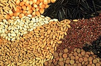
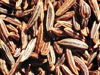
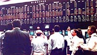

Crop Origins
Crop Industry
Cereals
Oilseeds
Alternative Crops
Forages
Crop Management
Marketing
Reproduction
|
Saskatchewan is known as the "breadbasket of the world". Cereal production continues to dominate the Province's
cropping activites with about 80% of the 33 million acres seeded to cereals.
About 10 million acres are usually left in summerfallow. Spring wheat accounts for about 40 percent of the seeded acreage, and the major oilseed, canola, now accounts for 12-17% of the area. Farmers continue to diversify into speciality crops with almost 3 million acres devoted to oilseed crops such as mustard, safflower and sunflower and legumes such as peas, lentils, and fababeans. |
|
Crop Origins
 Where do our modern crops, fruits and vegetabes come from? Where were they first domesticated. Check out your ideas here.
The Crop Industry |
|
 Is caraway really grown in Saskatchewan? Are potatoes a viable crop? What good are lentils to Saskatchewan farmers? Find out how plants such as these are changing Saskatchewan's traditional agricultural production.
Forages
What green plants are best used for livestock feed? Check here.
Marketing  Jump to the agribusiness aspect of crop production! Learn about the Canadian Wheat Board, the Winnipeg Commodity Exchange and more.
|